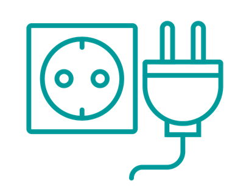

Spar-Tipps
Informationstechnik TV und Audio Waschen und Trocknen Licht Kühl- und Gefriergeräte Kochen Spülen Sonstiges
-
Tipp 1: Fernseher ausschalten Mehr lesen
-
So leicht sparen Sie Energie und Geld: Schalten Sie einen Fernseher,
der täglich 20 Stunden im Standby-Modus läuft, aus, sparen Sie rund 18 Euro* pro Jahr!
Berechnung: 15 Watt x 20 Stunden x 365 Tage = 109.500
Watt/Stunde = rd. 110 kWh. Ersparnis inkl. verbrauchsunabhängiger
Tarifbestandteile und USt. in Wien. -

Tipp 2: Netzschalter Pause gönnen Mehr lesen
-
Gönnen Sie Ihren Geräten eine Pause. Verwenden Sie Verteilerstecker
mit eingebautem Ausschalter. So verhindern Sie, dass Geräte im Standby-Betrieb
unnötig Strom verbrauchen. -
Tipp 3: Aufladbare Akkus verwenden Mehr lesen
-
"Aufladen statt wegwerfen" - sollte Ihr Motto lauten. Denn wieder
aufladbare Akkus sind auf Dauer wesentlich kostengünstiger als Batterien.
Noch besser ist es natürlich, so viele Geräte wie möglich mit Netzteilen zu betreiben.
Zusatz-Tipp: Ladegeräte sollten Sie nach der Benutzung immer ausstecken, sonst
verbrauchen sie ständig Strom. -
Tipp 4: Stromsparend waschen Mehr lesen
-
Dank moderner Waschmaschinen und Waschmittel reichen für normal
verschmutzte Wäsche 40° C völlig aus. Und: Lassen Sie Ihre Wäsche an der Luft
gratis trocknen. Der Wäscheständer spart Ihnen nicht nur Geld, sondern verbessert sogar
Ihr Raumklima. -
Tipp 5: Falten helfen Strom sparen Mehr lesen
-
"Aufladen statt wegwerfen" - sollte Ihr Motto lauten. Denn wieder
aufladbare Akkus sind auf Dauer wesentlich kostengünstiger als Batterien.
Noch besser ist es natürlich, so viele Geräte wie möglich mit Netzteilen zu betreiben.
Zusatz-Tipp: Ladegeräte sollten Sie nach der Benutzung immer ausstecken, sonst
verbrauchen sie ständig Strom. -
Tipp 6: Wasserkocher oder Topf Mehr lesen
-
Verwenden Sie immer einen Deckel und erhitzen Sie den Topf stets auf
der richtigen Platte – das geht schneller und spart Energie. Außerdem gilt: kleineres
Gerät, kleinerer Verbrauch. Kleingeräte wie Mikrowellen oder Wasserkocher sparen Strom.
Gerade für kleinere Portionen zahlt sich das aus.
Zusatz-Tipp: Schalten Sie Herdplatten und Backrohr bereits 10 Minuten früher aus.
Die Restwärme ist für die Endzubereitung oft ausreichend. -
Tipp 7: Geschirrspüler voll machen Mehr lesen
-
Nutzen Sie die maximale Füllmenge Ihres Geschirrspülers und wählen
Sie, wenn vorhanden, Umweltprogramme (wie z.B. ECO). Dies spart nicht nur Strom,
sondern auch Wasser. -
Tipp 8: Kühlschrank - Do's & Don'ts Mehr lesen
-
Sie haben zu viel gekocht und möchten die warmen Reste in den Kühlschrank
stellen? Lassen Sie diese immer zuerst auskühlen. Überprüfen Sie außerdem,
ob Ihr Kühlschrank zu kalt eingestellt ist. Eine Kühltemperatur von 7° C ist völlig
ausreichend. Wenn Sie gerne einen Blick in den Kühlschrank werfen, sollten Sie zu häufiges
und langes Öffnen vermeiden. Und: Stellen Sie Ihren Kühlschrank nicht unmittelbar neben Heizkörper oder
Geräte, die Wärme abstrahlen.
Unser Tipp: Beachten Sie beim Kauf von Elektrogeräten die Energieeffizienzklassen.
Diese geben Auskunft über den Energieverbrauch und unterstützen Sie bei Ihrer Kaufentscheidung. -
Tipp 9: Die richtige Beleuchtung Mehr lesen
-
Der richtige Umgang mit der Beleuchtung in Ihrem Zuhause birgt
enormes Stromsparpotenzial. Schalten Sie das Licht aus, wenn Sie den Raum verlassen.
Der Stromzähler läuft sonst unnötig weiter. Den gesamten Wohnraum zu beleuchten,
ist nicht sinnvoll. Schalten Sie nur in den Räumen das Licht an, in denen Sie es
wirklich benötigen. Überlegen Sie, ob in gewissen Bereichen, in denen Sie sich nur kurz
aufhalten, Bewegungsmelder sinnvoll sind. Und die richtigen Leuchtmittel und Lampen helfen
Ihnen, den Energieverbrauch zu senken, ohne, dass Sie dafür etwas tun müssen. -
Tipp 10: Richtige Waschtemperatur Mehr lesen
-
Eine weitere Sparmöglichkeit: Nicht ganz so heiß waschen. Durch eine
niedrigere Waschtemperatur sinkt der Stromverbrauch, das Wasser muss weniger stark
aufgeheizt werden. Meist reichen Waschtemperaturen von 30 bis 40 Grad. In der Regel
waschen moderne Waschmittel auch normal verschmutzte Wäsche problemlos sauber.
Nur bei starken Verschmutzungen ist es ratsam, eine höhere Temperatur einzuschalten.
Eine Vorwäsche ist grundsätzlich überflüssig und verschwendet nur unnötig Energie.